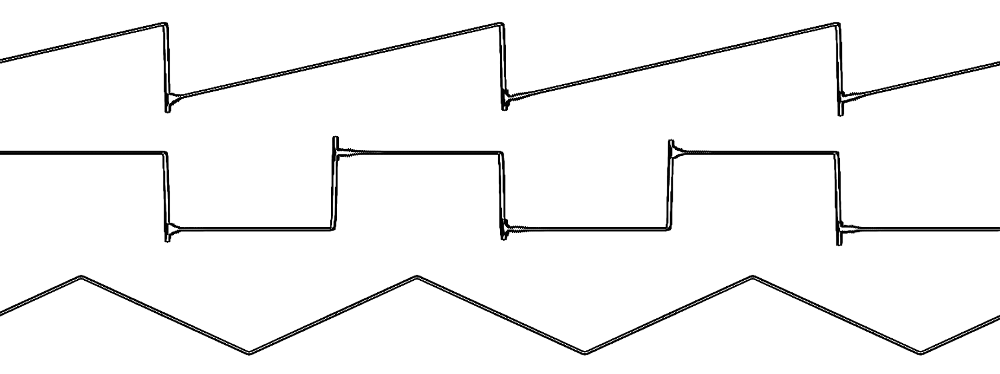

Introduction
Save for Later
Like
Subtractive synthesis is a process of creating sound by shaping and melding harmonically rich waveforms, systematically chiseling away and adding frequencies with the use of filters and effects.
Common starting waveforms are the saw, square, and triangle wave - which all posses their own unique character.

A saw, square, and triangle wave